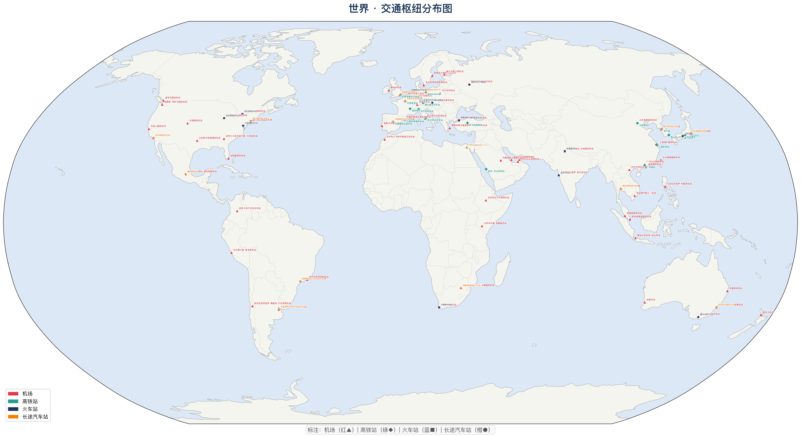
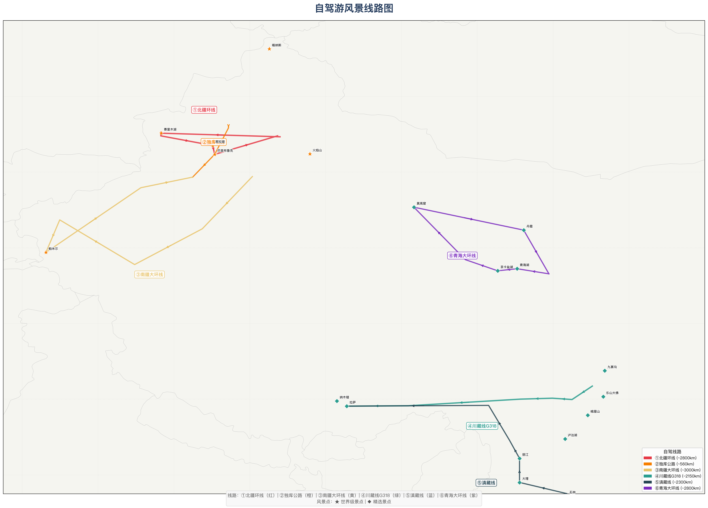

新疆维吾尔自治区 · 交通枢纽

图例：机场（红▲）| 火车站（蓝■）| 高铁站（绿◆）
新疆现有机场16个，覆盖主要地州市；兰新高铁贯通乌鲁木齐至哈密段。
新疆现有机场16个，覆盖主要地州市；兰新高铁贯通乌鲁木齐至哈密段。
机场、火车站、高铁站一目了然，搭配精选风景名胜与自驾线路，说走就走。


被誉为"神的后花园"，湖水随季节变色，秋季金黄白桦林与碧蓝湖水交相辉映。湖怪传说更添神秘色彩。
"大西洋最后一滴眼泪"，海拔2073米的高山冷水湖。夏季湖畔花海遍野，远处雪山倒映湖中。
中国最大沙漠，世界第二大流动沙漠。沙漠公路穿越其中，体验"死亡之海"的壮阔与孤寂。
"世界屋脊"的东端，慕士塔格峰终年积雪，塔什库尔干石头城遗址诉说千年丝路故事。
世界四大草原之一的亚高山草甸植物区，夏季绿毯般的草原上野花盛开，哈萨克牧民的毡房点缀其间。
《西游记》中的火焰山原型，夏季地表温度可达80°C。赤红色砂岩在阳光下如烈焰燃烧。
纳西族古城与终年积雪的玉龙雪山隔城相望，古城小桥流水，雪山巍峨壮丽。
"九寨归来不看水"，翠海、叠瀑、彩林、雪峰、藏情并称九寨五绝。
世界屋脊上的圣殿与天湖，离天空最近的信仰与自然。
"桂林山水甲天下"，漓江竹筏漂流，两岸喀斯特峰林如水墨画卷。
阿尔卑斯山脉的明珠，雪山、冰川、湖泊与木屋村庄构成最经典的欧洲山地风光。
日本精神象征与千年古都，樱花季的哲学之道、岚山竹林美到窒息。
南阿尔卑斯山下的冒险之都，峡湾、雪山、星空，《指环王》取景地。
冰与火的国度，间歇泉、极光、黑沙滩、蓝冰洞，地球上最超现实的风景。
